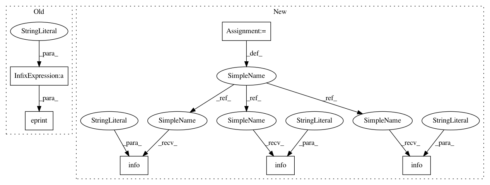

28627903b22c8d365295d6057be392ab7b03a6a2,mlflow/sagemaker/__init__.py,,_update_sagemaker_endpoint,#Any#Any#Any#Any#Any#Any#Any#Any#Any#Any#Any#Any#Any#,691
Before Change
image_url=image_url,
execution_role=role,
sage_client=sage_client)
eprint("Created new model with arn: %s" % new_model_response["ModelArn"])
if mode == DEPLOYMENT_MODE_ADD:
new_model_weight = 0
production_variants = deployed_production_variants
After Change
image_url=image_url,
execution_role=role,
sage_client=sage_client)
_logger.info("Created new model with arn: %s", new_model_response["ModelArn"])
if mode == DEPLOYMENT_MODE_ADD:
new_model_weight = 0
production_variants = deployed_production_variants
elif mode == DEPLOYMENT_MODE_REPLACE:
new_model_weight = 1
production_variants = []
new_production_variant = {
"VariantName": new_model_name,
"ModelName": new_model_name,
"InitialInstanceCount": instance_count,
"InstanceType": instance_type,
"InitialVariantWeight": new_model_weight
}
production_variants.append(new_production_variant)
// Create the new endpoint configuration and update the endpoint
// to adopt the new configuration
new_config_name = _get_sagemaker_config_name(endpoint_name)
endpoint_config_response = sage_client.create_endpoint_config(
EndpointConfigName=new_config_name,
ProductionVariants=production_variants,
Tags=[
{
"Key": "app_name",
"Value": endpoint_name,
},
],
)
_logger.info("Created new endpoint configuration with arn: %s",
endpoint_config_response["EndpointConfigArn"])
sage_client.update_endpoint(EndpointName=endpoint_name,
EndpointConfigName=new_config_name)
_logger.info("Updated endpoint with new configuration!")
// If applicable, clean up unused models and old configurations
if not archive:
_logger.info("Cleaning up unused resources...")
if mode == DEPLOYMENT_MODE_REPLACE:
s3_client = boto3.client("s3")
for pv in deployed_production_variants:
deployed_model_arn = _delete_sagemaker_model(model_name=pv["ModelName"],
sage_client=sage_client,
s3_client=s3_client)
_logger.info("Deleted model with arn: %s", deployed_model_arn)
sage_client.delete_endpoint_config(
EndpointConfigName=deployed_config_name)
_logger.info("Deleted endpoint configuration with arn: %s", deployed_config_arn)
def _create_sagemaker_model(model_name, model_s3_path, flavor, vpc_config, run_id, image_url,
execution_role, sage_client):
In pattern: SUPERPATTERN
Frequency: 3
Non-data size: 6
Instances
Project Name: mlflow/mlflow
Commit Name: 28627903b22c8d365295d6057be392ab7b03a6a2
Time: 2018-11-20
Author: 39497902+dbczumar@users.noreply.github.com
File Name: mlflow/sagemaker/__init__.py
Class Name:
Method Name: _update_sagemaker_endpoint
Project Name: mlflow/mlflow
Commit Name: 28627903b22c8d365295d6057be392ab7b03a6a2
Time: 2018-11-20
Author: 39497902+dbczumar@users.noreply.github.com
File Name: mlflow/sagemaker/__init__.py
Class Name:
Method Name: _update_sagemaker_endpoint
Project Name: mlflow/mlflow
Commit Name: 28627903b22c8d365295d6057be392ab7b03a6a2
Time: 2018-11-20
Author: 39497902+dbczumar@users.noreply.github.com
File Name: mlflow/sagemaker/__init__.py
Class Name:
Method Name: _create_sagemaker_endpoint
Project Name: mlflow/mlflow
Commit Name: 28627903b22c8d365295d6057be392ab7b03a6a2
Time: 2018-11-20
Author: 39497902+dbczumar@users.noreply.github.com
File Name: mlflow/sagemaker/__init__.py
Class Name:
Method Name: _get_default_s3_bucket